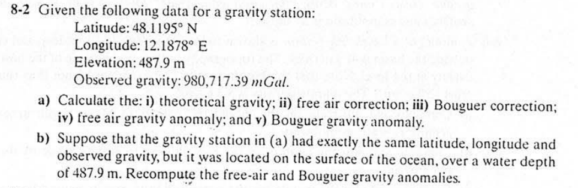

重力測站校正：理論重力、自由空氣修正、布格修正與重力異常

已知某一重力測站之觀測資料如下：
(a) 請計算：
(b) 假設該測站位於海洋表面：
若緯度、經度與觀測重力值保持不變，但測站位於海水表面，水深為 487.9 m。請重新計算其自由空氣重力異常與布格重力異常。
地球非完美球體，而是自轉導致的扁橢球體。重力隨緯度變化（赤道小、兩極大）。標準重力公式用以計算特定緯度 \(\phi\) 在參考橢球面上之標準重力值：
$$\text{IGF 1967: } g_{th}(\phi) = 978031.846 \left(1 + 0.005278895 \sin^2\phi + 0.000023462 \sin^4\phi\right) \text{ mGal}$$ $$\text{WGS-84 (1980): } g_{th}(\phi) = 978032.7 \left(1 + 0.0053024 \sin^2\phi - 0.0000058 \sin^2 2\phi\right) \text{ mGal}$$測站高程離地心越遠，重力隨距離二次方反比衰減。自由空氣修正將測站高度歸算至參考橢球面：
$$FAC = -\frac{\partial g}{\partial z} h \approx +0.3086 \times h \text{ (mGal, } h \text{ 單位為公尺)}$$扣除測站與海平面之間岩石板塊質量產生的額外引力（假設大陸地殼平均密度 \(\rho = 2.67 \text{ g/cm}^3\)）：
$$BC = 2\pi G \rho h \approx 0.04193 \times \rho \times h \text{ mGal}$$| 項目 | 公式 / 計算過程 | 結果 (IGF 1967) | 結果 (WGS84) |
|---|---|---|---|
| i) 理論重力 \(g_{th}\) | 帶入 \(\phi = 48.1195^\circ\) N | 980,900.90 mGal | 980,901.85 mGal |
| ii) 自由空氣修正 \(FAC\) | \(+0.3086 \times 487.9\) | +150.57 mGal | |
| iii) 布格修正 \(BC\) | \(0.04193 \times 2.67 \times 487.9\) | +54.62 mGal | |
| iv) 自由空氣重力異常 \(\Delta g_{FA}\) | \(980717.39 - g_{th} + 150.57\) | -32.94 mGal | -33.89 mGal |
| v) 布格重力異常 \(\Delta g_{B}\) | \(\Delta g_{FA} - BC = -32.94 - 54.62\) | -87.56 mGal | -88.51 mGal |
| 項目 | 公式 / 計算過程 | 結果 (IGF 1967) |
|---|---|---|
| 自由空氣重力異常 \(\Delta g_{FA}\) | \(g_{obs} - g_{th} + 0 = 980717.39 - 980900.90\) | -183.51 mGal |
| 海洋布格修正量 \(BC_{ocean}\) | \(0.04193 \times (2.67 - 1.03) \times 487.9\) | +33.55 mGal |
| 布格重力異常 \(\Delta g_{B}\) | \(\Delta g_{FA} + BC_{ocean} = -183.51 + 33.55\) | -149.96 mGal |
您可以自訂參數進行測試：
點擊上方按鈕執行計算...